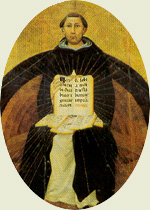
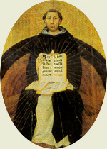

|  |
|---|
Textum Leoninum emendatum ex plagulis de prelo Taurini 1961 editum
et automato translatum a Roberto Busa SJ in taenias magneticas
denuo recognovit Enrique Alarcón atque instruxit


|  |
|---|


[23617] Contra Gentiles, lib. 1 cap. 14 n. 1 Ostenso igitur quod est aliquod primum ens, quod Deum dicimus, oportet eius conditiones investigare.
[23618] Contra Gentiles, lib. 1 cap. 14 n. 2 Est autem via remotionis utendum praecipue in consideratione divinae substantiae. Nam divina substantia omnem formam quam intellectus noster attingit, sua immensitate excedit: et sic ipsam apprehendere non possumus cognoscendo quid est. Sed aliqualem eius habemus notitiam cognoscendo quid non est. Tantoque eius notitiae magis appropinquamus, quanto plura per intellectum nostrum ab eo poterimus removere. Tanto enim unumquodque perfectius cognoscimus, quanto differentias eius ad alia plenius intuemur: habet enim res unaquaeque in seipsa esse proprium ab omnibus aliis rebus distinctum. Unde et in rebus quarum definitiones cognoscimus, primo eas in genere collocamus, per quod scimus in communi quid est; et postmodum differentias addimus, quibus a rebus aliis distinguatur; et sic perficitur substantiae rei completa notitia.
[23619] Contra Gentiles, lib. 1 cap. 14 n. 3 Sed quia in consideratione substantiae divinae non possumus accipere quid, quasi genus; nec distinctionem eius ab aliis rebus per affirmativas differentias accipere possumus, oportet eam accipere per differentias negativas. Sicut autem in affirmativis differentiis una aliam contrahit, et magis ad completam designationem rei appropinquat secundum quod a pluribus differre facit; ita una differentia negativa per aliam contrahitur, quae a pluribus differre facit. Sicut, si dicamus Deum non esse accidens, per hoc ab omnibus accidentibus distinguitur; deinde si addamus ipsum non esse corpus, distinguemus ipsum etiam ab aliquibus substantiis; et sic per ordinem ab omni eo quod est praeter ipsum, per negationes huiusmodi distinguetur; et tunc de substantia eius erit propria consideratio cum cognoscetur ut ab omnibus distinctus. Non tamen erit perfecta: quia non cognoscetur quid in se sit.
[23620] Contra Gentiles, lib. 1 cap. 14 n. 4 Ad procedendum igitur circa Dei cognitionem per viam remotionis, accipiamus principium id quod ex superioribus iam manifestum est, scilicet quod Deus sit omnino immobilis. Quod etiam auctoritas sacrae Scripturae confirmat. Dicitur enim Malach. 3-6: ego Deus, et non mutor; Iac. 1-17: apud quem non est transmutatio; et Num. 23-19: non est Deus quasi homo, ut mutetur.
[23622] Contra Gentiles, lib. 1 cap. 15 n. 1 Ex hoc autem apparet ulterius Deum esse aeternum.
[23623] Contra Gentiles, lib. 1 cap. 15 n. 2 Nam omne quod incipit esse vel desinit, per motum vel mutationem hoc patitur. Ostensum autem est Deum esse omnino immutabilem. Est igitur aeternus, carens principio et fine.
[23624] Contra Gentiles, lib. 1 cap. 15 n. 3 Item. Illa sola tempore mensurantur quae moventur: eo quod tempus est numerus motus, ut patet in IV physicorum. Deus autem est omnino absque motu, ut iam probatum est. Tempore igitur non mensuratur. Igitur in ipso non est prius et posterius accipere. Non ergo habet esse post non esse, nec non esse post esse potest habere, nec aliqua successio in esse ipsius inveniri potest: quia haec sine tempore intelligi non possunt. Est igitur carens principio et fine, totum esse suum simul habens. In quo ratio aeternitatis consistit.
[23625] Contra Gentiles, lib. 1 cap. 15 n. 4 Adhuc. Si aliquando non fuit et postmodum fuit, ab aliquo eductus est de non esse in esse. Non a seipso: quia quod non est non potest aliquid agere. Si autem ab alio, illud est prius eo. Ostensum autem est Deum esse primam causam. Non igitur esse incoepit. Unde nec esse desinet: quia quod semper fuit, habet virtutem semper essendi. Est igitur aeternus.
[23626] Contra Gentiles, lib. 1 cap. 15 n. 5 Amplius. Videmus in mundo quaedam quae sunt possibilia esse et non esse, scilicet generabilia et corruptibilia. Omne autem quod est possibile esse, causam habet: quia, cum de se aequaliter se habeat ad duo, scilicet esse et non esse, oportet, si ei approprietur esse, quod hoc sit ex aliqua causa. Sed in causis non est procedere in infinitum, ut supra probatum est per rationem Aristotelis. Ergo oportet ponere aliquid quod sit necesse-esse. Omne autem necessarium vel habet causam suae necessitatis aliunde; vel non, sed est per seipsum necessarium. Non est autem procedere in infinitum in necessariis quae habent causam suae necessitatis aliunde. Ergo oportet ponere aliquod primum necessarium, quod est per seipsum necessarium. Et hoc Deus est: cum sit causa prima, ut ostensum est. Est igitur Deus aeternus: cum omne necessarium per se sit aeternum.
[23627] Contra Gentiles, lib. 1 cap. 15 n. 6 Ostendit etiam Aristoteles ex sempiternitate temporis sempiternitatem motus. Ex quo iterum ostendit sempiternitatem substantiae moventis. Prima autem substantia movens Deus est. Est igitur sempiternus. Negata autem sempiternitate temporis et motus, adhuc manet ratio ad sempiternitatem substantiae. Nam, si motus incoepit, oportet quod ab aliquo movente incoeperit. Qui si incoepit, aliquo agente incoepit. Et sic vel in infinitum ibitur; vel devenietur ad aliquid quod non incoepit.
[23628] Contra Gentiles, lib. 1 cap. 15 n. 7 Huic autem veritati divina auctoritas testimonium perhibet. Unde Psalmus: tu autem, domine, in aeternum permanes. Et idem: tu autem idem ipse es, et anni tui non deficient.
[23630] Contra Gentiles, lib. 1 cap. 16 n. 1 Si autem Deus aeternus est, necesse est ipsum non esse in potentia.
[23631] Contra Gentiles, lib. 1 cap. 16 n. 2 Omne enim id in cuius substantia admiscetur potentia, secundum id quod habet de potentia potest non esse: quia quod potest esse, potest non esse. Deus autem secundum se non potest non esse: cum sit sempiternus. In Deo igitur non est potentia ad esse.
[23632] Contra Gentiles, lib. 1 cap. 16 n. 3 Adhuc. Quamvis id quod quandoque est in potentia quandoque actu, prius sit tempore in potentia quam in actu, tamen simpliciter actus est prior potentia: quia potentia non educit se in actum, sed oportet quod educatur in actum per aliquid quod sit in actu. Omne igitur quod est aliquo modo in potentia, habet aliquid prius se. Deus autem est primum ens et prima causa, ut ex supra dictis patet. Non igitur habet in se aliquid potentiae admixtum.
[23633] Contra Gentiles, lib. 1 cap. 16 n. 4 Item. Illud quod est per se necesse esse, nullo modo est possibile esse: quia quod est per se necesse esse, non habet causam; omne autem quod est possibile esse, habet causam, ut supra ostensum est. Deum autem est per se necesse esse. Nullo igitur modo est possibile esse. Nihil ergo potentiae in sua substantia invenitur.
[23634] Contra Gentiles, lib. 1 cap. 16 n. 5 Item. Unumquodque agit secundum quod est actu. Quod igitur non est totus actus, non toto se agit, sed aliquo sui. Quod autem non toto se agit, non est primum agens: agit enim alicuius participatione, non per essentiam suam. Primum igitur agens, quod Deus est, nullam habet potentiam admixtam, sed est actus purus.
[23635] Contra Gentiles, lib. 1 cap. 16 n. 6 Adhuc. Unumquodque, sicut natum est agere inquantum est actu, ita natum est pati inquantum est potentia: nam motus est actus potentia existentis. Sed Deus est omnino impassibilis ac immutabilis, ut patet ex dictis. Nihil ergo habet de potentia, scilicet passiva.
[23636] Contra Gentiles, lib. 1 cap. 16 n. 7 Item. Videmus aliquid esse in mundo quod exit de potentia in actum. Non autem educit se de potentia in actum: quia quod est potentia, nondum est; unde nec agere potest. Ergo oportet esse aliquid aliud prius, qui educatur de potentia in actum. Et iterum, si hoc est exiens de potentia in actum, oportet ante hoc aliquid aliud poni, quo reducatur in actum. Hoc autem in infinitum procedere non potest. Ergo oportet devenire ad aliquid quod est tantum actu et nullo modo in potentia. Et hoc dicimus Deum.
[23638] Contra Gentiles, lib. 1 cap. 17 n. 1 Apparet etiam ex hoc Deum non esse materiam.
[23639] Contra Gentiles, lib. 1 cap. 17 n. 2 Quia materia id quod est, in potentia est.
[23640] Contra Gentiles, lib. 1 cap. 17 n. 3 Item. Materia non est agendi principium: unde efficiens et materia in idem non incidunt, secundum philosophum. Deo autem convenit esse primam causam effectivam rerum, ut supra dictum est. Ipse igitur materia non est.
[23641] Contra Gentiles, lib. 1 cap. 17 n. 4 Amplius. Sequitur res naturales casu existere his qui omnia in materiam reducebant sicut in causam primam: contra quos agitur in II physicorum. Si igitur Deus, qui est prima causa, sit causa materialis rerum, sequitur omnia a casu existere.
[23642] Contra Gentiles, lib. 1 cap. 17 n. 5 Item. Materia non fit causa alicuius in actu nisi secundum quod alteratur et mutatur. Si igitur Deus est immobilis, ut probatum est, nullo modo potest esse rerum causa per modum materiae. Hanc autem veritatem fides Catholica confitetur, qua Deum non de sua substantia, sed de nihilo asserit cuncta creasse.
[23643] Contra Gentiles, lib. 1 cap. 17 n. 6 In hoc autem insania David de Dinando confunditur, qui ausus est dicere Deum esse idem quod prima materia, ex hoc quod, si non esset idem, oporteret differre ea aliquibus differentiis, et sic non essent simplicia; nam in eo quod per differentiam ab alio differt, ipsa differentia compositionem facit.
[23644] Contra Gentiles, lib. 1 cap. 17 n. 7 Hoc autem processit ex ignorantia qua nescivit quid inter differentiam et diversitatem intersit. Differens enim, ut in X Metaph. determinatur, dicitur ad aliquid, nam omne differens aliquo est differens: diversum autem aliquid absolute dicitur, ex hoc quod non est idem. Differentia igitur in his quaerenda est quae in aliquo conveniunt: oportet enim aliquid in eis assignari secundum quod differant; sicut duae species conveniunt in genere, unde oportet quod differentiis distinguantur. In his autem quae in nullo conveniunt, non est quaerendum quo differant, sed seipsis diversa sunt. Sic enim et oppositae differentiae ab invicem distinguuntur: non enim participant genus quasi partem suae essentiae: et ideo non est quaerendum quibus differant, seipsis enim diversa sunt. Sic etiam Deus et materia prima distinguuntur, quorum unus est actus purus, aliud potentia pura, in nullo convenientiam habentes.
[23646] Contra Gentiles, lib. 1 cap. 18 n. 1 Ex praemissis autem concludi potest quod in Deo nulla sit compositio. Nam in omni composito oportet esse actum et potentiam. Non enim plura possunt simpliciter unum fieri nisi aliquid sit ibi actus, et aliud potentia. Quae enim actu sunt, non uniuntur nisi quasi colligata vel congregata, quae non sunt unum simpliciter. In quibus etiam ipsae partes congregatae sunt sicut potentia respectu unionis: sunt enim unitae in actu postquam fuerint in potentia unibiles. In Deo autem nulla est potentia. Non est igitur in eo aliqua compositio.
[23647] Contra Gentiles, lib. 1 cap. 18 n. 2 Item. Omne compositum posterius est suis componentibus. Primum ergo ens, quod Deus est, ex nullis compositum est.
[23648] Contra Gentiles, lib. 1 cap. 18 n. 3 Adhuc. Omne compositum est potentia dissolubile, quantum est ex ratione compositionis: licet in quibusdam sit aliquid aliud dissolutioni repugnans. Quod autem est dissolubile, est in potentia ad non esse. Quod Deo non competit: cum sit per se necesse-esse. Non est igitur in eo aliqua compositio.
[23649] Contra Gentiles, lib. 1 cap. 18 n. 4 Amplius. Omnis compositio indiget aliquo componente: si enim compositio est, ex pluribus est; quae autem secundum se sunt plura, in unum non convenirent nisi ab aliquo componente unirentur. Si igitur compositus esset Deus, haberet componentem: non enim ipse seipsum componere posset, quia nihil est causa sui ipsius; esset enim prius seipso, quod est impossibile. Componens autem est causa efficiens compositi. Ergo Deus haberet causam efficientem. Et sic non esset causa prima, quod supra habitum est.
[23650] Contra Gentiles, lib. 1 cap. 18 n. 5 Item. In quolibet genere tanto aliquid est nobilius quanto simplicius: sicut in genere calidi ignis, qui non habet aliquam frigidi permixtionem. Quod igitur est in fine nobilitatis omnium entium, oportet esse in fine simplicitatis. Hoc autem quod est in fine nobilitatis omnium entium, dicimus Deum, cum sit prima causa: causa enim est nobilior effectu. Nulla igitur compositio ei accidere potest.
[23651] Contra Gentiles, lib. 1 cap. 18 n. 6 Praeterea. In omni composito bonum non est huius vel illius partis, sed totius,- et dico bonum secundum illam bonitatem quae est propria totius et perfectio eius: nam partes sunt imperfectae respectu totius: sicut partes hominis non sunt homo, partes etiam numeri senarii non habent perfectionem senarii, et similiter partes lineae non perveniunt ad perfectionem mensurae quae in tota linea invenitur. Si ergo Deus est compositus, perfectio et bonitas eius propria invenitur in toto, non autem in aliqua eius partium. Et sic non erit in eo pure illud bonum quod est proprium ei. Non est ergo ipse primum et summum bonum.
[23652] Contra Gentiles, lib. 1 cap. 18 n. 7 Item. Ante omnem multitudinem oportet invenire unitatem. In omni autem composito est multitudo. Igitur oportet id quod est ante omnia, scilicet Deum, omni compositione carere.
[23654] Contra Gentiles, lib. 1 cap. 19 n. 1 Ex hoc autem philosophus concludit quod in Deo nihil potest esse violentum neque extra naturam. Omne enim illud in quo aliquid violentum et praeter naturam invenitur, aliquid sibi additum habet: nam quod est de substantia rei non potest esse violentum neque praeter naturam. Nullum autem simplex habet in se aliquid additum: ex hoc enim compositio relinqueretur. Cum igitur Deus sit simplex, ut ostensum est, nihil in eo potest esse violentum neque praeter naturam.
[23655] Contra Gentiles, lib. 1 cap. 19 n. 2 Amplius. Necessitas coactionis est necessitas ex alio. In Deo autem non est necessitas ex alio, sed est per seipsum necessarium, et causa necessitatis aliis. Igitur nihil in eo est coactum.
[23656] Contra Gentiles, lib. 1 cap. 19 n. 3 Adhuc. Ubicumque est aliquid violentum, ibi potest esse aliquid praeter id quod rei per se convenit: nam violentum contrariatur ei quod est secundum naturam. Sed in Deo non est possibile esse aliquid praeter id quod secundum se ei convenit: cum secundum se sit necesse-esse, ut ostensum est. Non potest igitur in eo esse aliquid violentum.
[23657] Contra Gentiles, lib. 1 cap. 19 n. 4 Item. Omne in quo est aliquid violentum vel innaturale, natum est ab alio moveri: nam violentum est cuius principium est extra nil conferente vim passo. Deus autem est omnino immobilis, ut ostensum est. Igitur non potest in eo esse aliquid violentum vel innaturale.
[23659] Contra Gentiles, lib. 1 cap. 20 n. 1 Ex praemissis etiam ostenditur quod Deus non est corpus.
[23660] Contra Gentiles, lib. 1 cap. 20 n. 2 Omne enim corpus, cum sit continuum, compositum est et partes habens. Deus autem non est compositus, ut ostensum est. Igitur corpus non est.
[23661] Contra Gentiles, lib. 1 cap. 20 n. 3 Praeterea. Omne quantum est aliquo modo in potentia: nam continuum est potentia divisibile in infinitum; numerus autem in infinitum est augmentabilis. Omne autem corpus est quantum. Ergo omne corpus est in potentia. Deus autem non est in potentia, sed actus purus, ut ostensum est. Ergo Deus non est corpus.
[23662] Contra Gentiles, lib. 1 cap. 20 n. 4 Adhuc. Si Deus est corpus, oportet quod sit aliquod corpus naturale: nam corpus mathematicum non est per se existens, ut philosophus probat, eo quod dimensiones accidentia sunt. Non autem est corpus naturale: cum sit immobilis, ut ostensum est; omne autem corpus naturale mobile est. Deus igitur non est corpus.
[23663] Contra Gentiles, lib. 1 cap. 20 n. 5 Amplius. Omne corpus finitum est: quod tam de corpore circulari quam de recto probatur in I caeli et mundi. Quodlibet autem corpus finitum intellectu et imaginatione transcendere possumus. Si igitur Deus est corpus, intellectus et imaginatio nostra aliquid maius Deo cogitare possunt. Et sic Deus non est maior intellectu nostro. Quod est inconveniens. Non est igitur corpus.
[23664] Contra Gentiles, lib. 1 cap. 20 n. 6 Adhuc. Cognitio intellectiva certior est quam sensitiva. Invenitur autem aliquid subiectum sensui in rerum natura. Igitur et intellectui. Sed secundum ordinem obiectorum est ordo potentiarum, sicut et distinctio. Ergo super omnia sensibilia est aliquid intelligibile in rerum natura existens. Omne autem corpus in rebus existens est sensibile. Igitur super omnia corpora est aliquid accipere nobilius. Si igitur Deus est corpus, non erit primum et maximum ens.
[23665] Contra Gentiles, lib. 1 cap. 20 n. 7 Praeterea. Quolibet corpore non vivente res vivens est nobilior. Quolibet autem corpore vivente sua vita est nobilior: cum per hoc habeat supra alia corpora nobilitatem. Id igitur quo nihil est nobilius, corpus non est. Hoc autem est Deus. Igitur non est corpus.
[23666] Contra Gentiles, lib. 1 cap. 20 n. 8 Item. Inveniuntur rationes philosophorum ad idem ostendendum procedentes ex aeternitate motus, in hunc modum. In omni motu sempiterno oportet quod primum movens non moveatur neque per se neque per accidens, sicut ex supra dictis patet. Corpus autem caeli movetur circulariter motu sempiterno. Ergo primus motor eius non movetur neque per se neque per accidens. Nullum autem corpus movet localiter nisi moveatur: eo quod oportet movens et motum esse simul; et sic corpus movens moveri oportet, ad hoc quod sit simul cum corpore moto. Nulla etiam virtus in corpore movet nisi per accidens moveatur: quia, moto corpore, movetur per accidens virtus corporis. Ergo primus motor caeli non est corpus neque virtus in corpore. Hoc autem ad quod ultimo reducitur motus caeli sicut ad primum movens immobile, est Deus. Deus igitur non est corpus.
[23667] Contra Gentiles, lib. 1 cap. 20 n. 9 Adhuc. Nulla potentia infinita est potentia in magnitudine. Potentia primi motoris est potentia infinita. Ergo non est in aliqua magnitudine. Et sic Deus, qui est primus motor, neque est corpus neque est virtus in corpore.
[23668] Contra Gentiles, lib. 1 cap. 20 n. 10 Prima sic probatur. Si potentia magnitudinis alicuius est infinita, aut ergo erit magnitudinis finitae; aut infinitae. Magnitudo infinita nulla est, ut probatur in III Physic. et in I caeli et mundi. Magnitudinis autem finitae non est possibile esse potentiam infinitam. Et sic in nulla magnitudine potest esse potentia infinita.
[23669] Contra Gentiles, lib. 1 cap. 20 n. 11 Quod autem in magnitudine finita non possit esse potentia infinita, sic probatur. Aequalem effectum quem facit potentia minor in tempore maiori, facit potentia maior in tempore minori: qualiscumque sit ille effectus, sive sit secundum alterationem, sive secundum motum localem, sive secundum quemcumque alium motum. Sed potentia infinita est maior omni potentia finita. Ergo oportet quod in minori perficiat effectum, velocius movendo, quam potentia quaecumque finita. Nec potest esse quod in minori quod sit tempus. Relinquitur igitur quod hoc erit in indivisibili temporis. Et sic movere et moveri et motus erunt in instanti. Cuius contrarium demonstratum est in VI physicorum.
[23670] Contra Gentiles, lib. 1 cap. 20 n. 12 Quod autem non possit potentia infinita magnitudinis finitae movere in tempore, sic iterum probatur. Sit potentia infinita quae est a. Accipiatur pars eius quae est ab. Pars igitur ista movebit in tempore maiori. Oportebit tamen esse aliquam proportionem huius temporis ad tempus in quo movet tota potentia: cum utrumque tempus sit finitum. Sint igitur haec duo tempora in decupla proportione se ad invicem habentia: non enim quantum ad hanc rationem differt istam vel aliam proportionem dicere. Si autem addatur ad potentiam praedictam finitam, diminui oportebit de tempore secundum proportionem additionis ad potentiam: cum maior potentia in minori tempore moveat. Si ergo addatur decuplum, illa potentia movebit in tempore quod erit decima pars temporis in quo movebat prima pars accepta infinitae potentiae, scilicet ab. Et tamen haec potentia quae est decuplum eius, est potentia finita: cum habeat proportionem determinatam ad potentiam finitam. Relinquitur igitur quod in aequali tempore movet potentia finita et infinita. Quod est impossibile. Non igitur potentia infinita magnitudinis finitae potest movere in tempore aliquo.
[23671] Contra Gentiles, lib. 1 cap. 20 n. 13 Quod autem potentia primi motoris sit infinita, sic probatur. Nulla potentia finita potest movere tempore infinito. Sed potentia primi motoris movet in tempore infinito: quia motus primus est sempiternus. Ergo potentia primi motoris est infinita. Prima sic probatur. Si aliqua potentia finita alicuius corporis movet tempore infinito, pars illius corporis, habens partem potentiae, movebit in tempore minori: quia quanto aliquid est maioris potentiae, tanto in maiori tempore motum continuare poterit; et sic pars praedicta movebit tempore finito, maior autem pars in maiori tempore movere poterit. Et sic semper, secundum quod addetur ad potentiam motoris, addetur ad tempus secundum eandem proportionem. Sed additio aliquoties facta perveniet ad quantitatem totius, vel etiam excedet. Ergo et additio ex parte temporis perveniet ad quantitatem temporis in quo movet totum. Tempus autem in quo totum movebat, dicebatur esse infinitum. Ergo tempus finitum metietur tempus infinitum. Quod est impossibile.
[23672] Contra Gentiles, lib. 1 cap. 20 n. 14 Sed contra hunc processum plures sunt obiectiones.
[23673] Contra Gentiles, lib. 1 cap. 20 n. 15 Quarum una est, quia potest poni quod illud corpus quod movet primum motum, non est divisibile: sicut patet de corpore caelesti. Praedicta autem probatio procedit ex divisione eius.
[23674] Contra Gentiles, lib. 1 cap. 20 n. 16 Sed ad hoc dicendum quod conditionalis potest esse vera cuius antecedens est impossibile. Et si quid est quod destruat veritatem talis conditionalis, est impossibile: sicut, si aliquis destrueret veritatem huius conditionalis, si homo volat, habet alas, esset impossibile. Et secundum modum hunc intelligendus est processus probationis praedictae. Quia haec conditionalis est vera, si corpus caeleste dividitur, pars eius erit minoris potentiae quam totum. Huius autem conditionalis veritas tollitur si ponatur primum movens esse corpus, propter impossibilia quae sequuntur. Unde patet hoc esse impossibile. Et similiter potest responderi si fiat obiectio de augmento potentiarum finitarum. Quia non est accipere in rerum natura potentias secundum omnem proportionem quam habet tempus ad tempus quodcumque. Est tamen conditionalis vera, qua in praedicta probatione indigetur.
[23675] Contra Gentiles, lib. 1 cap. 20 n. 17 Secunda obiectio est quia, etsi corpus dividitur, aliqua virtus potest esse alicuius corporis quae non dividitur diviso corpore: sicut anima rationalis non dividitur diviso corpore.
[23676] Contra Gentiles, lib. 1 cap. 20 n. 18 Et ad hoc est dicendum quod per processum praedictum non probatur quod non sit Deus coniunctus corpori sicut anima rationalis corpori humano: sed quod non est virtus in corpore sicut virtus materialis, quae dividitur ad divisionem corporis. Unde etiam dicitur de intellectu humano quod non est corpus neque virtus in corpore. Quod autem Deus, non sit unitus corpori sicut anima, alterius rationis est.
[23677] Contra Gentiles, lib. 1 cap. 20 n. 19 Tertia obiectio est quia, si cuiuslibet corporis est potentia finita, ut in praedicto processu ostenditur; per potentiam autem finitam non potest aliquid durare tempore infinito: sequetur quod nullum corpus possit durare tempore infinito. Et sic corpus caeleste de necessitate corrumpetur.
[23678] Contra Gentiles, lib. 1 cap. 20 n. 20 Ad hoc autem a quibusdam respondetur quod corpus caeleste secundum potentiam suam potest deficere, sed perpetuitatem durationis acquirit ab alio quod est potentiae infinitae. Et huic solutioni videtur attestari Plato, qui de corporibus caelestibus Deum loquentem inducit in hunc modum: natura vestra estis dissolubilia, voluntate autem mea indissolubilia: quia voluntas mea maior est nexu vestro.
[23679] Contra Gentiles, lib. 1 cap. 20 n. 21 Hanc autem solutionem improbat Commentator, in XI Metaph. Nam impossibile est, secundum eum, quod id quod est de se possibile non esse, acquirat perpetuitatem essendi ab alio. Sequeretur enim quod corruptibile mutetur in incorruptibilitatem. Quod est impossibile secundum ipsum. Et ideo ipse in hunc modum respondet: quod in corpore caelesti omnis potentia quae est, finita est: non tamen oportet quod habeat omnem potentiam; est enim in corpore caelesti, secundum Aristotelem, in VIII Metaph., potentia ad ubi, sed non ad esse. Et sic non oportet quod insit ei potentia ad non esse.
[23680] Contra Gentiles, lib. 1 cap. 20 n. 22 Sciendum tamen quod haec responsio Commentatoris non est sufficiens. Quia, etsi detur quod in corpore caelesti non sit potentia quasi passiva ad esse, quae est potentia materiae, est tamen in eo potentia quasi activa, quae est virtus essendi: cum expresse Aristoteles dicat, in I caeli et mundi, quod caelum habet virtutem ut sit semper.
[23681] Contra Gentiles, lib. 1 cap. 20 n. 23 Et ideo melius dicendum est quod, cum potentia dicatur ad actum, oportet iudicare de potentia secundum modum actus. Motus autem de sui ratione quantitatem habet et extensionem: unde duratio eius infinita requirit quod potentia movens sit infinita. Esse autem non habet aliquam extensionem quantitatis: praecipue in re cuius esse est invariabile, sicut caelum. Et ideo non oportet quod virtus essendi sit infinita in corpore finito, licet in infinitum duret: quia non differt quod per illam virtutem aliquid duret in uno instanti vel tempore infinito, cum esse illud invariabile non attingatur a tempore nisi per accidens.
[23682] Contra Gentiles, lib. 1 cap. 20 n. 24 Quarta obiectio est de hoc quod non videtur esse necessarium quod id quod movet tempore infinito, habeat potentiam infinitam, in illis moventibus quae movendo non alterantur. Quia talis motus nihil consumit de potentia eorum: unde non minore tempore movere possunt postquam aliquo tempore moverunt quam ante; sicut solis virtus finita est, et, quia in agendo eius virtus activa non minuitur, infinito tempore potest agere in haec inferiora, secundum naturam.
[23683] Contra Gentiles, lib. 1 cap. 20 n. 25 Et ad hoc dicendum est quod corpus non movet nisi motum, ut probatum est. Et ideo, si contingat corpus aliquod non moveri, sequetur ipsum non movere. In omni autem quod movetur est potentia ad opposita: quia termini motus sunt oppositi. Et ideo, quantum est de se, omne corpus quod movetur possibile est non moveri. Et quod possibile est non moveri, non habet de se ut perpetuo tempore moveatur. Et sic nec quod in perpetuo tempore moveat.
[23684] Contra Gentiles, lib. 1 cap. 20 n. 26 Procedit ergo praedicta demonstratio de potentia finita corporis finiti, quae non potest de se movere tempore infinito. Sed corpus quod de se possibile est moveri et non moveri, movere et non movere, acquirere potest perpetuitatem motus ab aliquo. Quod oportet esse incorporeum. Et ideo oportet primum movens esse incorporeum. Et sic nihil prohibet secundum naturam corpus finitum, quod acquirit ab alio perpetuitatem in moveri, habere etiam perpetuitatem in movere: nam et ipsum primum corpus caeleste, secundum naturam, potest perpetuo motu inferiora corpora caelestia revolvere, secundum quod sphaera movet sphaeram.
[23685] Contra Gentiles, lib. 1 cap. 20 n. 27 Nec est inconveniens secundum Commentatorem quod illud quod de se est in potentia moveri et non moveri, acquirat ab alio perpetuitatem motus, sicut ponebatur esse impossibile de perpetuitate essendi. Nam motus est quidam defluxus a movente in mobile: et ideo potest aliquod mobile acquirere ab alio perpetuitatem motus, quam non habet de se. Esse autem est aliquid fixum et quietum in ente: et ideo quod de se est in potentia ad non esse, non potest, ut ipse dicit, secundum viam naturae acquirere ab alio perpetuitatem essendi.
[23686] Contra Gentiles, lib. 1 cap. 20 n. 28 Quinta obiectio est quod per praedictum processum non videtur maior ratio quare non sit potentia infinita in magnitudine quam extra magnitudinem: nam utrobique sequetur quod moveat non in tempore.
[23687] Contra Gentiles, lib. 1 cap. 20 n. 29 Et ad hoc dicendum quod finitum et infinitum in magnitudine et tempore et motu inveniuntur secundum unam rationem, sicut probatur in III et in VI Physic.: et ideo infinitum in uno eorum aufert proportionem finitam in aliis. In his autem quae carent magnitudine, non est finitum et infinitum nisi aequivoce. Unde praedictus modus demonstrandi in talibus potentiis locum non habet.
[23688] Contra Gentiles, lib. 1 cap. 20 n. 30 Aliter autem respondetur et melius, quod caelum habet duos motores: unum proximum, qui est finitae virtutis, et ab hoc habet quod motus eius sit finitae velocitatis; et alium remotum, qui est infinitae virtutis, a quo habet quod motus eius possit esse infinitae durationis. Et sic patet quod potentia infinita quae non est in magnitudine, potest movere corpus non immediate in tempore. Sed potentia quae est in magnitudine oportet quod moveat immediate: cum nullum corpus moveat nisi motum. Unde, si moveret, sequeretur quod moveret in non tempore.
[23689] Contra Gentiles, lib. 1 cap. 20 n. 31 Potest adhuc melius dici quod potentia quae non est in magnitudine est intellectus, et movet per voluntatem. Unde movet secundum exigentiam mobilis, et non secundum proportionem suae virtutis. Potentia autem quae est in magnitudine non potest movere nisi per necessitatem naturae: quia probatum est quod intellectus non est virtus corporea. Et sic movet de necessitate secundum proportionem suae quantitatis. Unde sequitur, si movet, quod moveat in instanti.
[23690] Contra Gentiles, lib. 1 cap. 20 n. 32 Secundum hoc ergo, remotis praedictis obiectionibus, procedit demonstratio Aristotelis.
[23691] Contra Gentiles, lib. 1 cap. 20 n. 33 Amplius. Nullus motus qui est a movente corporeo potest esse continuus et regularis: eo quod movens corporale in motu locali movet attrahendo vel expellendo; id autem quod attrahitur vel expellitur non in eadem dispositione se habet ad moventem a principio motus usque ad finem, cum quandoque sit propinquius, quandoque remotius; et sic nullum corpus potest movere motum continuum et regularem. Motus autem primus est continuus et regularis, ut probatur in VIII Physic. Igitur movens primum motum non est corpus.
[23692] Contra Gentiles, lib. 1 cap. 20 n. 34 Item. Nullus motus qui est ad finem qui exit de potentia in actum, potest esse perpetuus: quia, cum perventum fuerit ad actum, motus quiescit. Si ergo motus primus est perpetuus, oportet quod sit ad finem qui sit semper et omnibus modis in actu. Tale autem non est aliquod corpus neque aliqua virtus in corpore: cum omnia huiusmodi sint mobilia per se vel per accidens. Igitur finis primi motus non est corpus neque virtus in corpore. Finis autem primi motus est primum movens, quod movet sicut desideratum. Hoc autem est Deus. Deus igitur neque est corpus neque virtus in corpore.
[23693] Contra Gentiles, lib. 1 cap. 20 n. 35 Quamvis autem falsum sit, secundum fidem nostram, quod motus caeli sit perpetuus, ut infra patebit; tamen verum est quod motus ille non deficiet neque propter impotentiam motoris, neque propter corruptionem substantiae mobilis, cum non videatur motus caeli per diuturnitatem temporis lentescere. Unde demonstrationes praedictae suam efficaciam non perdunt.
[23694] Contra Gentiles, lib. 1 cap. 20 n. 36 Huic autem veritati demonstratae concordat divina auctoritas. Dicitur enim Ioan. 4-24: spiritus est Deus, et eos qui eum adorant, in spiritu et veritate adorare oportet. Dicitur etiam 1 Tim. 1-17: regi saeculorum immortali, invisibili, soli Deo. Et Rom. 1-20: invisibilia Dei per ea quae facta sunt intellecta conspiciuntur: quae enim non visu sed intellectu conspiciuntur, incorporea sunt.
[23695] Contra Gentiles, lib. 1 cap. 20 n. 37 Per hoc autem destruitur error primorum philosophorum naturalium, qui non ponebant nisi causas materiales, ut ignem vel aquam vel aliquid huiusmodi; et sic prima rerum principia corpora dicebant, et eadem vocabant deos.
[23696] Contra Gentiles, lib. 1 cap. 20 n. 38 Inter quos etiam quidam fuerunt ponentes causas moventes amicitiam et litem. Qui etiam propter praedictas rationes confutantur. Nam, cum lis et amicitia sint in corporibus secundum eos, sequetur prima principia moventia esse virtutes in corpore.
[23697] Contra Gentiles, lib. 1 cap. 20 n. 39 Ipsi etiam ponebant Deum esse compositum ex quatuor elementis et amicitia. Per quod datur intelligi quod posuerunt Deum esse corpus caeleste.
[23698] Contra Gentiles, lib. 1 cap. 20 n. 40 Inter antiquos autem solus Anaxagoras ad veritatem accessit, ponens intellectum moventem omnia.
[23699] Contra Gentiles, lib. 1 cap. 20 n. 41 Hac etiam veritate redarguuntur gentiles ponentes ipsa elementa mundi et virtutes in eis existentes deos esse, ut solem, lunam, terram, aquam et huiusmodi, occasionem habentes ex praedictis philosophorum erroribus.
[23700] Contra Gentiles, lib. 1 cap. 20 n. 42 Praedictis etiam rationibus excluduntur deliramenta Iudaeorum simplicium, Tertulliani, Vadianorum sive Anthropomorphitarum haereticorum qui Deum corporalibus lineamentis figurabant: necnon et Manichaeorum, qui quandam infinitam lucis substantiam per infinitum spatium distentam Deum aestimabant.
[23701] Contra Gentiles, lib. 1 cap. 20 n. 43 Quorum omnium errorum fuit occasio quod de divinis cogitantes ad imaginationem deducebantur, per quam non potest accipi nisi corporis similitudo. Et ideo eam in incorporeis meditandis derelinquere oportet.
[23703] Contra Gentiles, lib. 1 cap. 21 n. 1 Ex praemissis autem haberi potest quod Deus est sua essentia, quidditas seu natura.
[23704] Contra Gentiles, lib. 1 cap. 21 n. 2 In omni enim eo quod non est sua essentia sive quidditas, oportet aliquam esse compositionem. Cum enim in unoquoque sit sua essentia, si nihil in aliquo esset praeter eius essentiam, totum quod res est esset eius essentia: et sic ipsum esset sua essentia. Si igitur aliquid non esset sua essentia, oportet aliquid in eo esse praeter eius essentiam. Et sic oportet in eo esse compositionem. Unde etiam essentia in compositis significatur per modum partis, ut humanitas in homine. Ostensum est autem in Deo nullam esse compositionem. Deus igitur est sua essentia.
[23705] Contra Gentiles, lib. 1 cap. 21 n. 3 Adhuc. Solum illud videtur esse praeter essentiam vel quidditatem rei quod non intrat definitionem ipsius: definitio enim significat quid est res. Sola autem accidentia rei sunt quae in definitione non cadunt. Sola igitur accidentia sunt in re aliqua praeter essentiam eius. In Deo autem non sunt aliqua accidentia, ut ostendetur. Nihil igitur est in eo praeter essentiam eius. Est igitur ipse sua essentia.
[23706] Contra Gentiles, lib. 1 cap. 21 n. 4 Amplius. Formae quae de rebus subsistentibus non praedicantur, sive in universali sive in singulari acceptis, sunt formae quae non per se singulariter subsistunt in seipsis individuatae. Non enim dicitur quod Socrates aut homo aut animal sit albedo, quia albedo non est per se singulariter subsistens, sed individuatur per subiectum subsistens. Similiter etiam formae naturales non subsistunt per se singulariter, sed individuantur in propriis materiis: unde non dicimus quod hic ignis, aut ignis, sit sua forma. Ipsae etiam essentiae vel quidditates generum vel specierum individuantur per materiam signatam huius vel illius individui, licet etiam quidditas generis vel speciei formam includat et materiam in communi: unde non dicitur quod Socrates, vel homo, sit humanitas. Sed divina essentia est per se singulariter existens et in seipsa individuata: cum non sit in aliqua materia, ut ostensum est. Divina igitur essentia praedicatur de Deo, ut dicatur: Deus est sua essentia.
[23707] Contra Gentiles, lib. 1 cap. 21 n. 5 Praeterea. Essentia rei vel est res ipsa vel se habet ad ipsam aliquo modo ut causa: cum res per suam essentiam speciem sortiatur. Sed nullo modo potest esse aliquid causa Dei: cum sit primum ens, ut ostensum est. Deus igitur est sua essentia.
[23708] Contra Gentiles, lib. 1 cap. 21 n. 6 Item. Quod non est sua essentia, se habet secundum aliquid sui ad ipsam ut potentia ad actum. Unde et per modum formae significatur essentia, ut puta, humanitas. Sed in Deo nulla est potentialitas, ut supra ostensum est. Oportet igitur quod ipse sit sua essentia.
[23710] Contra Gentiles, lib. 1 cap. 22 n. 1 Ex his autem quae supra ostensa sunt, ulterius probari potest quod in Deo non est aliud essentia vel quidditas quam suum esse.
[23711] Contra Gentiles, lib. 1 cap. 22 n. 2 Ostensum est enim supra aliquid esse quod per se necesse est esse, quod Deus est. Hoc igitur esse quod necesse est, si est alicui quidditati quae non est quod ipsum est, aut est dissonum illi quidditati seu repugnans, sicut per se existere quidditati albedinis: aut ei consonum sive affine, sicut albedini esse in alio. Si primo modo, illi quidditati non conveniet esse quod est per se necesse: sicut nec albedini per se existere. Si autem secundo modo, oportet quod vel esse huiusmodi dependeat ab essentia; vel utrumque ab alia causa; vel essentia ab esse. Prima duo sunt contra rationem eius quod est per se necesse-esse: quia, si ab alio dependet, iam non est necesse esse. Ex tertio vero sequitur quod illa quidditas accidentaliter adveniat ad rem quae per se necesse est esse: quia omne quod sequitur ad esse rei, est ei accidentale. Et sic non erit eius quidditas. Deus igitur non habet essentiam quae non sit suum esse.
[23712] Contra Gentiles, lib. 1 cap. 22 n. 3 Sed contra hoc potest dici quod illud esse non absolute dependet ab essentia illa, ut omnino non sit nisi illa esset: sed dependet quantum ad coniunctionem qua ei coniungitur. Et sic illud esse per se necesse est, sed ipsum coniungi non per se necesse est.
[23713] Contra Gentiles, lib. 1 cap. 22 n. 4 Haec autem responsio praedicta inconvenientia non evadit. Quia si illud esse potest intelligi sine illa essentia, sequetur quod illa essentia accidentaliter se habet ad illud esse. Sed id quod est per se necesse-esse est illud esse. Ergo illa essentia se habet accidentaliter ad id quod est per se necesse esse. Non ergo est quidditas eius. Hoc autem quod est per per se necesse-esse, est Deus. Non igitur illa est essentia Dei, sed aliqua essentia Deo posterior. Si autem non potest intelligi illud esse sine illa essentia, tunc illud esse absolute dependet ab eo a quo dependet coniunctio sua ad essentiam illam. Et sic redit idem quod prius.
[23714] Contra Gentiles, lib. 1 cap. 22 n. 5 Item. Unumquodque est per suum esse. Quod igitur non est suum esse, non est per se necesse-esse. Deus autem est per se necesse-esse. Ergo Deus est suum esse.
[23715] Contra Gentiles, lib. 1 cap. 22 n. 6 Amplius. Si esse Dei non est sua essentia, non autem pars eius esse potest, cum essentia divina sit simplex, ut ostensum est, oportet quod huiusmodi esse sit aliquid praeter essentiam eius. Omne autem quod convenit alicui quod non est de essentia eius, convenit ei per aliquam causam: ea enim quae per se non sunt unum, si coniungantur, oportet per aliquam causam uniri. Esse igitur convenit illi quidditati per aliquam causam. Aut igitur per aliquid quod est de essentia illius rei, sive per essentiam ipsam, aut per aliquid aliud. Si primo modo, essentia autem est secundum illud esse, sequitur quod aliquid sit sibi ipsi causa essendi. Hoc autem est impossibile: quia prius secundum intellectum est causam esse quam effectum; si ergo aliquid sibi ipsi esset causa essendi, intelligeretur esse antequam haberet esse, quod est impossibile:- nisi intelligatur quod aliquid sit sibi causa essendi secundum esse accidentale, quod esse est secundum quid. Hoc enim non est impossibile: invenitur enim aliquod ens accidentale causatum ex principiis sui subiecti, ante quod esse intelligitur esse substantiale subiecti. Nunc autem non loquimur de esse accidentali, sed de substantiali. Si autem illi conveniat per aliquam aliam causam; omne autem quod acquirit esse ab alia causa, est causatum, et non est causa prima; Deus autem est prima causa non habens causam, ut supra demonstratum est: igitur ista quidditas quae acquirit esse aliunde, non est quidditas Dei. Necesse est igitur quod Dei esse quidditas sua sit.
[23716] Contra Gentiles, lib. 1 cap. 22 n. 7 Amplius. Esse actum quendam nominat: non enim dicitur esse aliquid ex hoc quod est in potentia, sed ex eo quod est in actu. Omne autem cui convenit actus aliquis diversum ab eo existens, se habet ad ipsum ut potentia ad actum: actus enim et potentia ad se invicem dicuntur. Si ergo divina essentia est aliud quam suum esse, sequitur quod essentia et esse se habeant sicut potentia et actus. Ostensum est autem in Deo nihil esse de potentia, sed ipsum esse purum actum. Non igitur Dei essentia est aliud quam suum esse.
[23717] Contra Gentiles, lib. 1 cap. 22 n. 8 Item. Omne illud quod non potest esse nisi concurrentibus pluribus, est compositum. Sed nulla res in qua est aliud essentia et aliud esse, potest esse nisi concurrentibus pluribus, scilicet essentia et esse. Ergo omnis res in qua est aliud essentia et aliud esse, est composita. Deus autem non est compositus, ut ostensum est. Ipsum igitur esse Dei est sua essentia.
[23718] Contra Gentiles, lib. 1 cap. 22 n. 9 Amplius. Omnis res est per hoc quod habet esse. Nulla igitur res cuius essentia non est suum esse, est per essentiam suam, sed participatione alicuius, scilicet ipsius esse. Quod autem est per participationem alicuius, non potest esse primum ens: quia id quod aliquid participat ad hoc quod sit, est eo prius. Deus autem est primum ens, quo nihil est prius. Dei igitur essentia est suum esse.
[23719] Contra Gentiles, lib. 1 cap. 22 n. 10 Hanc autem sublimem veritatem Moyses a domino est edoctus, qui cum quaereret a domino, Exod. 3 dicens: si dixerint ad me filii Israel, quod nomen eius? Quid dicam eis? Dominus respondit: ego sum qui sum. Sic dices filiis Israel: qui est misit me ad vos, ostendens suum proprium nomen esse qui est. Quodlibet autem nomen est institutum ad significandum naturam seu essentiam alicuius rei. Unde relinquitur quod ipsum divinum esse est sua essentia vel natura.
[23720] Contra Gentiles, lib. 1 cap. 22 n. 11 Hanc etiam veritatem Catholici doctores professi sunt. Ait namque Hilarius, in libro de Trin.: esse non est accidens Deo, sed subsistens veritas, et manens causa, et naturalis generis proprietas. Boetius etiam dicit, in libro de Trin., quod divina substantia est ipsum esse et ab ea est esse.
[23722] Contra Gentiles, lib. 1 cap. 23 n. 1 Ex hac etiam veritate de necessitate sequitur quod Deo supra eius essentiam nihil supervenire possit, neque aliquid ei accidentaliter inesse.
[23723] Contra Gentiles, lib. 1 cap. 23 n. 2 Ipsum enim esse non potest participare aliquid quod non sit de essentia sua: quamvis id quod est possit aliquid aliud participare. Nihil enim est formalius aut simplicius quam esse. Et sic ipsum esse nihil participare potest. Divina autem substantia est ipsum esse. Ergo nihil habet quod non sit de sua substantia. Nullum ergo accidens ei inesse potest.
[23724] Contra Gentiles, lib. 1 cap. 23 n. 3 Amplius. Omne quod inest alicui accidentaliter, habet causam quare insit: cum sit praeter essentiam eius cui inest. Si igitur aliquid accidentaliter sit in Deo, oportet quod hoc sit per aliquam causam. Aut ergo causa accidentis est ipsa divina substantia, aut aliquid aliud. Si aliquid aliud, oportet quod illud agat in divinam substantiam: nihil enim inducit aliquam formam, vel substantialem vel accidentalem, in aliquo recipiente, nisi aliquo modo agendo in ipsum; eo quod agere nihil aliud est quam facere aliquid actu, quod quidem est per formam. Ergo Deus patietur et movebitur ab alio agente. Quod est contra praedeterminata. Si autem ipsa divina substantia est causa accidentis quod sibi inest; impossibile est autem quod sit causa illius secundum quod est recipiens ipsum, quia sic idem secundum idem faceret seipsum in actu; ergo oportet, si in Deo est aliquod accidens, quod secundum aliud et aliud recipiat et causet accidens illud, sicut corporalia recipiunt propria accidentia per naturam materiae et causant per formam. Sic igitur Deus erit compositus. Cuius contrarium superius probatum est.
[23725] Contra Gentiles, lib. 1 cap. 23 n. 4 Item. Omne subiectum accidentis comparatur ad ipsum ut potentia ad actum: eo quod accidens quaedam forma est faciens esse actu secundum esse accidentale. Sed in Deo nulla est potentialitas, ut supra ostensum est. In eo igitur nullum accidens esse potest.
[23726] Contra Gentiles, lib. 1 cap. 23 n. 5 Adhuc. Cuicumque inest aliquid accidentaliter, est aliquo modo secundum suam naturam mutabile: accidens enim de se natum est inesse et non inesse. Si igitur Deus habet aliquid accidentaliter sibi conveniens, sequetur quod ipse sit mutabilis. Cuius contrarium supra demonstratum est.
[23727] Contra Gentiles, lib. 1 cap. 23 n. 6 Amplius. Cuicumque inest aliquod accidens, non est quidquid habet in se: quia accidens non est de essentia subiecti. Sed Deus est quidquid in se habet. In Deo igitur nullum est accidens. Media sic probatur. Unumquodque nobilius invenitur in causa quam in effectu. Deus autem est omnium causa. Ergo quidquid est in eo, nobilissimo modo in eo invenitur. Perfectissime autem convenit aliquid alicui quod est ipsummet: hoc enim perfectius est unum quam cum aliquid alteri substantialiter unitur ut forma materiae; quae etiam unio perfectior est quam cum aliquid accidentaliter inest. Relinquitur ergo quod Deus sit quidquid habet.
[23728] Contra Gentiles, lib. 1 cap. 23 n. 7 Item. Substantia non dependet ab accidente: quamvis accidens dependeat a substantia. Quod autem non dependet ab aliquo, potest aliquando inveniri sine illo. Ergo potest aliqua substantia inveniri sine accidente. Hoc autem praecipue videtur simplicissimae substantiae convenire, qualis est substantia divina. Divinae igitur substantiae omnino accidens non inest.
[23729] Contra Gentiles, lib. 1 cap. 23 n. 8 In hanc autem sententiam etiam Catholici tractatores conveniunt. Unde Augustinus, in libro de Trin., dicit quod in Deo nullum est accidens.
[23730] Contra Gentiles, lib. 1 cap. 23 n. 9 Ex hac autem veritate ostensa, error quorundam in lege Sarracenorum loquentium confutatur, qui ponunt quasdam intentiones divinae essentiae superadditas.
[23732] Contra Gentiles, lib. 1 cap. 24 n. 1 Ostendi etiam ex praedictis potest quod supra ipsum divinum esse non potest aliquid superaddi quod designet ipsum designatione essentiali, sicut designatur genus per differentias.
[23733] Contra Gentiles, lib. 1 cap. 24 n. 2 Impossibile est enim aliquid esse in actu nisi omnibus existentibus quibus esse substantiale designatur: non enim potest esse animal in actu quin sit animal rationale vel irrationale. Unde etiam Platonici, ponentes ideas, non posuerunt ideas per se existentes generum, quae designantur ad esse speciei per differentias essentiales; sed posuerunt ideas per se existentes solarum specierum, quae ad sui designationem non indigent essentialibus differentiis. Si igitur divinum esse per aliquid aliud superadditum designetur designatione essentiali, ipsum esse non erit in actu nisi illo superaddito existente. Sed ipsum esse divinum est sua substantia, ut ostensum est. Ergo substantia divina non potest esse in actu nisi aliquo superveniente. Ex quo potest concludi quod non sit per se necesse-esse. Cuius contrarium supra ostensum est.
[23734] Contra Gentiles, lib. 1 cap. 24 n. 3 Item. Omne illud quod indiget aliquo superaddito ad hoc quod possit esse, est in potentia respectu illius. Sed divina substantia non est aliquo modo in potentia, ut supra ostensum est. Sed sua substantia est suum esse. Igitur esse suum non potest designari aliqua designatione substantiali per aliquid sibi superadditum.
[23735] Contra Gentiles, lib. 1 cap. 24 n. 4 Amplius. Omne illud per quod res consequitur esse in actu et est intrinsecum rei, vel est tota essentia rei, vel pars essentiae. Quod autem designat aliquid designatione essentiali, facit rem esse actu et est intrinsecum rei designatae: alias per id designari non posset substantialiter. Ergo oportet quod sit vel ipsa essentia rei, vel pars essentiae. Sed si aliquid superadditur ad esse divinum, hoc non potest esse tota essentia Dei: quia iam ostensum est quod esse Dei non est aliud ab essentia eius. Relinquitur ergo quod sit pars essentiae divinae. Et sic Deus erit compositus ex partibus essentialiter. Cuius contrarium supra ostensum est.
[23736] Contra Gentiles, lib. 1 cap. 24 n. 5 Item. Quod additur alicui ad designationem alicuius designatione essentiali, non constituit eius rationem, sed solum esse in actu: rationale enim additum animali acquirit animali esse in actu, non autem constituit rationem animalis inquantum est animal; nam differentia non intrat definitionem generis. Sed si in Deo addatur aliquid per quod designetur designatione essentiali, oportet quod illud constituat ei cui additur rationem propriae eius quidditatis seu naturae: nam quod sic additur, acquirit rei esse in actu; hoc autem, scilicet esse in actu, est ipsa divina essentia, ut supra ostensum est. Relinquitur ergo quod supra divinum esse nihil possit addi quod designet ipsum designatione essentiali, sicut differentia designat genus.
[23738] Contra Gentiles, lib. 1 cap. 25 n. 1 Ex hoc autem de necessitate concluditur quod Deus non sit in aliquo genere.
[23739] Contra Gentiles, lib. 1 cap. 25 n. 2 Nam omne quod est in aliquo genere, habet aliquid in se per quod natura generis designatur ad speciem: nihil enim est in genere quod non sit in aliqua eius specie. Hoc autem in Deo est impossibile, ut ostensum est. Impossibile est igitur Deum esse in aliquo genere.
[23740] Contra Gentiles, lib. 1 cap. 25 n. 3 Amplius. Si Deus sit in genere, aut est in genere accidentis, aut in genere substantiae. In genere accidentis non est: accidens enim non potest esse primum ens et prima causa. In genere etiam substantiae esse non potest: quia substantia quae est genus, non est ipsum esse; alias omnis substantia esset esse suum, et sic non esset causata ab alio, quod esse non potest, ut patet ex dictis. Deus autem est ipsum esse. Igitur non est in aliquo genere.
[23741] Contra Gentiles, lib. 1 cap. 25 n. 4 Item. Quicquid est in genere secundum esse differt ab aliis quae in eodem genere sunt. Alias genus de pluribus non praedicaretur. Oportet autem omnia quae sunt in eodem genere, in quidditate generis convenire quia de omnibus genus in quod quid est praedicatur. Esse igitur cuiuslibet in genere existentis est praeter generis quidditatem. Hoc autem in Deo impossibile est. Deus igitur in genere non est.
[23742] Contra Gentiles, lib. 1 cap. 25 n. 5 Amplius. Unumquodque collocatur in genere per rationem suae quidditatis: genus enim praedicatur in quid est. Sed quidditas Dei est ipsum suum esse. Secundum quod non collocatur aliquid in genere: quia sic ens esset genus, quod significat ipsum esse. Relinquitur igitur quod Deus non sit in genere.
[23743] Contra Gentiles, lib. 1 cap. 25 n. 6 Quod autem ens non possit esse genus, probatur per philosophum in hunc modum. Si ens esset genus, oporteret differentiam aliquam inveniri per quam traheretur ad speciem. Nulla autem differentia participat genus, ita scilicet quod genus sit in ratione differentiae, quia sic genus poneretur bis in definitione speciei: sed oportet differentiam esse praeter id quod intelligitur in ratione generis. Nihil autem potest esse quod sit praeter id quod intelligitur per ens, si ens sit de intellectu eorum de quibus praedicatur. Et sic per nullam differentiam contrahi potest. Relinquitur igitur quod ens non sit genus. Unde ex hoc de necessitate concluditur quod Deus non sit in genere.
[23744] Contra Gentiles, lib. 1 cap. 25 n. 7 Ex quo etiam patet quod Deus definiri non potest: quia omnis definitio est ex genere et differentiis.
[23745] Contra Gentiles, lib. 1 cap. 25 n. 8 Patet etiam quod non potest demonstratio de ipso fieri, nisi per effectum: quia principium demonstrationis est definitio eius de quo fit demonstratio.
[23746] Contra Gentiles, lib. 1 cap. 25 n. 9 Potest autem alicui videri quod, quamvis nomen substantiae Deo proprie convenire non possit, quia Deus non substat accidentibus; res tamen significata per nomen ei conveniat, et ita sit in genere substantiae. Nam substantia est ens per se: quod Deo constat convenire, ex quo probatum est ipsum non esse accidens.
[23747] Contra Gentiles, lib. 1 cap. 25 n. 10 Sed ad hoc dicendum est ex dictis quod in definitione substantiae non est ens per se. Ex hoc enim quod dicitur ens non posset esse genus: quia iam probatum est quod ens non habet rationem generis. Similiter nec ex hoc quod dicitur per se. Quia hoc non videtur importare nisi negationem tantum: dicitur enim ens per se ex hoc quod non est in alio; quod est negatio pura. Quae nec potest rationem generis constituere: quia sic genus non diceret quid est res, sed quid non est. Oportet igitur quod ratio substantiae intelligatur hoc modo, quod substantia sit res cui conveniat esse non in subiecto; nomen autem rei a quidditate imponitur, sicut nomen entis ab esse; et sic in ratione substantiae intelligitur quod habeat quidditatem cui conveniat esse non in alio. Hoc autem Deo non convenit: nam non habet quidditatem nisi suum esse. Unde relinquitur quod nullo modo est in genere substantiae. Et sic nec in aliquo genere: cum ostensum sit ipsum non esse in genere accidentis.
[23749] Contra Gentiles, lib. 1 cap. 26 n. 1 Ex his autem confutatur quorundam error qui dixerunt Deum nihil aliud esse quam esse formale uniuscuiusque rei.
[23750] Contra Gentiles, lib. 1 cap. 26 n. 2 Nam esse hoc dividitur per esse substantiae et esse accidentis. Divinum autem esse neque est esse substantiae neque esse accidentis, ut probatum est. Impossibile est igitur Deum esse illud esse quo formaliter unaquaeque res est.
[23751] Contra Gentiles, lib. 1 cap. 26 n. 3 Item. Res ad invicem non distinguuntur secundum quod habent esse: quia in hoc omnia conveniunt. Si ergo res differunt ad invicem, oportet quod vel ipsum esse specificetur per aliquas differentias additas, ita quod rebus diversis sit diversum esse secundum speciem: vel quod res differant per hoc quod ipsum esse diversis naturis secundum speciem convenit. Sed primum horum est impossibile: quia enti non potest fieri aliqua additio secundum modum quo differentia additur generi, ut dictum est. Relinquitur ergo quod res propter hoc differant quod habent diversas naturas, quibus acquiritur esse diversimode. Esse autem divinum non advenit alii naturae, sed est ipsa natura, ut ostensum est. Si igitur esse divinum esset formale esse omnium, oporteret omnia simpliciter esse unum.
[23752] Contra Gentiles, lib. 1 cap. 26 n. 4 Amplius. Principium naturaliter prius est eo cuius est principium. Esse autem in quibusdam rebus habet aliquid quasi principium: forma enim dicitur esse principium essendi; et similiter agens, quod facit aliqua esse actu. Si igitur esse divinum sit esse uniuscuiusque rei, sequetur quod Deus, qui est suum esse, habeat aliquam causam; et sic non sit necesse-esse per se. Cuius contrarium supra ostensum est.
[23753] Contra Gentiles, lib. 1 cap. 26 n. 5 Adhuc. Quod est commune multis, non est aliquid praeter multa nisi sola ratione: sicut animal non est aliud praeter Socratem et Platonem et alia animalia nisi intellectu, qui apprehendit formam animalis expoliatam ab omnibus individuantibus et specificantibus; homo enim est quod vere est animal; alias sequeretur quod in Socrate et Platone essent plura animalia, scilicet ipsum animal commune, et homo communis, et ipse Plato. Multo igitur minus et ipsum esse commune est aliquid praeter omnes res existentes nisi in intellectu solum. Si igitur Deus sit esse commune, Deus non erit aliqua res nisi quae sit in intellectu tantum. Ostensum autem est supra Deum esse aliquid non solum in intellectu, sed in rerum natura. Non est igitur Deus ipsum esse commune omnium.
[23754] Contra Gentiles, lib. 1 cap. 26 n. 6 Item. Generatio per se loquendo est via in esse, et corruptio via in non esse: non enim generationis terminus est forma et corruptionis privatio, nisi quia forma facit esse et privatio non esse; dato enim quod aliqua forma non faceret esse, non diceretur generari quod talem formam acciperet. Si igitur Deus sit omnium rerum esse formale, sequetur quod sit terminus generationis. Quod est falsum: cum ipse sit aeternus, ut supra ostensum est.
[23755] Contra Gentiles, lib. 1 cap. 26 n. 7 Praeterea. Sequetur quod esse cuiuslibet rei fuerit ab aeterno. Non igitur potest esse generatio vel corruptio. Si enim sit, oportet quod esse praeexistens alicui rei de novo acquiratur. Aut ergo alicui prius existenti: aut nullo modo prius existenti. Si primo modo, cum unum sit esse omnium existentium secundum positionem praedictam, sequetur quod res quae generari dicitur, non accipiat novum esse, sed novum modum essendi: quod non facit generationem, sed alterationem. Si autem nullo modo prius existebat, sequetur quod fiat ex nihilo: quod est contra rationem generationis. Igitur haec positio omnino generationem et corruptionem destruit. Et ideo patet eam esse impossibilem.
[23756] Contra Gentiles, lib. 1 cap. 26 n. 8 Hunc etiam errorem sacra doctrina repellit, dum confitetur Deum excelsum et elevatum, ut dicitur Isaiae 6-1; et eum super omnia esse, ut Rom. 9-5 habetur. Si enim esse omnium, tunc est aliquid omnium, non autem super omnia. Hi etiam errantes eadem sententia procelluntur qua et idolatrae, qui incommunicabile nomen, scilicet Dei, lignis et lapidibus imposuerunt, ut habetur Sap. 14-21. Si enim Deus est esse omnium, non magis dicetur vere lapis est ens, quam lapis est Deus.
[23757] Contra Gentiles, lib. 1 cap. 26 n. 9 Huic autem errori quatuor sunt quae videntur praestitisse fomentum.
[23758] Contra Gentiles, lib. 1 cap. 26 n. 10 Primum est quarundam auctoritatum intellectus perversus. Invenitur enim a Dionysio dictum, IV cap. Cael. Hier.: esse omnium est superessentialis divinitas. Ex quo intelligere voluerunt ipsum esse formale omnium rerum Deum esse, non considerantes hunc intellectum ipsis verbis consonum esse non posse. Nam si divinitas est omnium esse formale, non erit super omnia, sed inter omnia, immo aliquid omnium. Cum ergo divinitatem super omnia dixit, ostendit secundum suam naturam ab omnibus distinctum et super omnia collocatum. Ex hoc vero quod dixit quod divinitas est esse omnium, ostendit quod a Deo in omnibus quaedam divini esse similitudo reperitur. Hunc etiam eorum perversum intellectum alibi apertius excludens, dixit in II cap. de Div. Nom., quod ipsius Dei neque tactus neque aliqua commixtio est ad res alias, sicut est puncti ad lineam vel figurae sigilli ad ceram.
[23759] Contra Gentiles, lib. 1 cap. 26 n. 11 Secundum quod eos in hunc errorem promovit, est rationis defectus. Quia enim id quod commune est per additionem specificatur vel individuatur, aestimaverunt divinum esse, cui nulla fit additio, non esse aliquod esse proprium, sed esse commune omnium; non considerantes quod id quod commune est vel universale sine additione esse non potest, sed sine additione consideratur: non enim animal potest esse absque rationali differentia, quamvis absque his differentiis cogitetur. Licet etiam cogitetur universale absque additione, non tamen absque receptibilitate additionis: nam si animali nulla differentia addi posset, genus non esset; et similiter est de omnibus aliis nominibus. Divinum autem esse est absque additione non solum in cogitatione, sed etiam in rerum natura: nec solum absque additione, sed etiam absque receptibilitate additionis. Unde ex hoc ipso quod additionem, non recipit nec recipere potest, magis concludi potest quod Deus non sit esse commune, sed proprium: etiam ex hoc ipso suum esse ab omnibus aliis distinguitur quod nihil ei addi potest. Unde Commentator in libro de causis dicit quod causa prima ex ipsa puritate suae bonitatis ab aliis distinguitur et quodammodo individuatur.
[23760] Contra Gentiles, lib. 1 cap. 26 n. 12 Tertium quod eos in hunc errorem induxit, est divinae simplicitatis consideratio. Quia enim Deus in fine simplicitatis est, aestimaverunt illud quod in ultimo resolutionis invenitur eorum quae fiunt in nobis, Deum esse, quasi simplicissimum: non enim est in infinitum procedere in compositione eorum quae sunt in nobis. In hoc etiam eorum defecit ratio, dum non attenderunt id quod in nobis simplicissimum invenitur, non tam rem completam, quam rei aliquid esse. Deo autem simplicitas attribuitur sicut rei alicui perfectae subsistenti.
[23761] Contra Gentiles, lib. 1 cap. 26 n. 13 Quartum etiam quod eos ad hoc inducere potuit, est modus loquendi quo dicimus Deum in omnibus rebus esse: non intelligentes quod non sic est in rebus quasi aliquid rei, sed sicut rei causa quae nullo modo suo effectui deest. Non enim similiter dicimus esse formam in corpore, et nautam in navi.
[23763] Contra Gentiles, lib. 1 cap. 27 n. 1 Ostenso igitur quod Deus non sit esse omnium, similiter ostendi potest quod Deus non sit alicuius rei forma.
[23764] Contra Gentiles, lib. 1 cap. 27 n. 2 Nam divinum esse non potest esse alicuius quidditatis quae non sit ipsum esse, ut ostensum est. Quod autem est ipsum esse divinum, non est aliud quam Deus. Impossibile est igitur Deum esse alicuius alterius formam.
[23765] Contra Gentiles, lib. 1 cap. 27 n. 3 Amplius. Forma corporis non est ipsum esse, sed essendi principium. Deus autem est ipsum esse. Non ergo est Deus forma corporis.
[23766] Contra Gentiles, lib. 1 cap. 27 n. 4 Item. Ex unione formae et materiae resultat aliquid compositum, quod est totum respectu materiae et formae. Partes autem sunt in potentia respectu totius. In Deo autem nulla est potentialitas. Impossibile est igitur Deum esse formam unitam alicui rei.
[23767] Contra Gentiles, lib. 1 cap. 27 n. 5 Adhuc. Quod per se habet esse, nobilius est eo quod habet esse in alio. Omnis autem forma alicuius corporis habet esse in alio. Cum igitur Deus sit ens nobilissimum, quasi prima essendi causa, non potest esse alicuius forma.
[23768] Contra Gentiles, lib. 1 cap. 27 n. 6 Praeterea. Hoc idem potest ostendi ex aeternitate motus, sic. Si Deus est forma alicuius mobilis, cum ipse sit primum movens, compositum erit movens seipsum. Sed movens seipsum potest moveri et non moveri. Utrumque igitur in ipso est. Quod autem est huiusmodi, non habet motus indeficientiam ex seipso. Oportet igitur supra movens seipsum ponere aliud primum movens, quod largiatur ei perpetuitatem motus. Et sic Deus, qui est primum movens, non est forma corporis moventis seipsum.
[23769] Contra Gentiles, lib. 1 cap. 27 n. 7 Est autem hic processus utilis ponentibus aeternitatem motus. Quo non posito, eadem conclusio haberi potest ex regularitate motus caeli. Sicut enim movens seipsum potest quiescere et moveri, ita potest velocius et tardius moveri. Necessitas igitur uniformitatis motus caeli dependet ex aliquo principio superiori omnino immobili, quod non est pars corporis moventis seipsum quasi aliqua forma eius.
[23770] Contra Gentiles, lib. 1 cap. 27 n. 8 Huic autem veritati Scripturae concordat auctoritas. Dicitur enim in Psalmo: elevata est magnificentia tua super caelos, Deus. Et Iob 8: excelsior caelo est et quid facies? Longior terra mensura eius est et profundior mari.
[23771] Contra Gentiles, lib. 1 cap. 27 n. 9 Sic igitur gentilium error evacuatur, qui dicebant Deum esse animam caeli vel etiam animam totius mundi, et ex hoc errore, idolatriam defendebant, dicentes totum mundum esse Deum, non ratione corporis, sed ratione animae, sicut homo dicitur sapiens non ratione corporis sed animae: quo supposito, sequi opinabantur quod mundo et partibus eius non indebite divinus cultus exhibeatur. Commentator etiam dicit, in XI Metaphys., quod hic locus fuit lapsus sapientum gentis Zabiorum, idest idolatrarum quia scilicet posuerunt Deum esse formam caeli.
[23773] Contra Gentiles, lib. 1 cap. 28 n. 1 Licet autem ea quae sunt et vivunt, perfectiora sint quam ea quae tantum sunt, Deus tamen qui non est aliud quam suum esse, est universaliter ens perfectum. Et dico universaliter perfectum, cui non deest alicuius generis nobilitas.
[23774] Contra Gentiles, lib. 1 cap. 28 n. 2 Omnis enim nobilitas cuiuscumque rei est sibi secundum suum esse: nulla enim nobilitas esset homini ex sua sapientia nisi per eam sapiens esset, et sic de aliis. Sic ergo secundum modum quo res habet esse, est suus modus in nobilitate: nam res secundum quod suum esse contrahitur ad aliquem specialem modum nobilitatis maiorem vel minorem, dicitur esse secundum hoc nobilior vel minus nobilis. Igitur si aliquid est cui competit tota virtus essendi, ei nulla nobilitatum deesse potest quae alicui rei conveniat. Sed rei quae est suum esse, competit esse secundum totam essendi potestatem: sicut, si esset aliqua albedo separata, nihil ei de virtute albedinis deesse posset; nam alicui albo aliquid de virtute albedinis deest ex defectu recipientis albedinem, quae eam secundum modum suum recipit, et fortasse non secundum totum posse albedinis. Deus igitur, qui est suum esse, ut supra probatum est, habet esse secundum totam virtutem ipsius esse. Non potest ergo carere aliqua nobilitate quae alicui rei conveniat.
[23775] Contra Gentiles, lib. 1 cap. 28 n. 3 Sicut autem omnis nobilitas et perfectio inest rei secundum quod est, ita omnis defectus inest ei secundum quod aliqualiter non est. Deus autem, sicut habet esse totaliter, ita ab eo totaliter absistit non esse: quia per modum per quem habet aliquid esse, deficit a non esse. A Deo ergo omnis defectus absistit. Est igitur universaliter perfectus.
[23776] Contra Gentiles, lib. 1 cap. 28 n. 4 Illa vero quae tantum sunt, non sunt imperfecta propter imperfectionem ipsius esse absoluti: non enim ipsa habent esse secundum suum totum posse, sed participant esse per quendam particularem modum et imperfectissimum.
[23777] Contra Gentiles, lib. 1 cap. 28 n. 5 Item. Omne imperfectum ab aliquo perfecto necesse est ut praecedatur: semen enim est ab animali vel a planta. Igitur primum ens oportet esse perfectissimum. Ostensum est autem Deum esse primum ens. Est igitur perfectissimus.
[23778] Contra Gentiles, lib. 1 cap. 28 n. 6 Amplius. Unumquodque perfectum est inquantum est actu; imperfectum autem secundum quod est potentia cum privatione actus. Id igitur quod nullo modo est potentia sed est actus purus, oportet perfectissimum esse. Tale autem Deus est. Est igitur perfectissimus.
[23779] Contra Gentiles, lib. 1 cap. 28 n. 7 Amplius. Nihil agit nisi secundum quod est in actu. Actio igitur consequitur modum actus in agente. Impossibile est igitur effectum qui per actionem educitur, esse in nobiliori actu quam sit actus agentis: possibile est tamen actum effectus imperfectiorem esse quam sit actus causae agentis, eo quod actio potest debilitari ex parte eius in quod terminatur. In genere autem causae efficientis fit reductio ad unam primam quae Deus dicitur, ut ex dictis patet, a quo sunt omnes res, ut in sequentibus ostendetur. Oportet igitur quicquid actu est in quacumque re alia, inveniri in Deo multo eminentius quam sit in re illa, non autem e converso. Est igitur Deus perfectissimus.
[23780] Contra Gentiles, lib. 1 cap. 28 n. 8 Item. In unoquoque genere est aliquid perfectissimum in genere illo, ad quod omnia quae sunt illius generis mensurantur: quia ex eo unumquodque ostenditur magis vel minus perfectum esse, quod ad mensuram sui generis magis vel minus appropinquat; sicut album dicitur esse mensura in omnibus coloribus, et virtuosus inter omnes homines. Id autem quod est mensura omnium entium non potest esse aliud quam Deus, qui est suum esse. Ipsi igitur nulla deest perfectionum quae aliquibus rebus conveniat: alias non esset omnium communis mensura.
[23781] Contra Gentiles, lib. 1 cap. 28 n. 9 Hinc est quod, cum quaereret Moyses divinam videre faciem seu gloriam, responsum est ei a domino, ego ostendam tibi omne bonum, ut habetur Exod. 33-19, per hoc dans intelligere in se omnis bonitatis plenitudinem esse. Dionysius etiam, in V cap. de Div. Nom. dicit: Deus non quodam modo est existens, sed simpliciter et incircumscriptive totum esse in seipso accepit et praeaccepit. Sciendum tamen est quod perfectio Deo convenienter attribui non potest si nominis significatio quantum ad sui originem attendatur: quod enim factum non est, nec perfectum posse dici videtur. Sed quia omne quod fit, de potentia in actum deductum est et de non esse in esse quando factum est, tunc recte perfectum esse dicitur, quasi totaliter factum, quando potentia totaliter est ad actum reducta, ut nihil de non esse retineat, sed habeat esse completum. Per quandam igitur nominis extensionem perfectum dicitur non solum quod fiendo pervenit ad actum completum, sed id etiam quod est in actu completo absque omni factione. Et sic Deum perfectum esse dicimus, secundum illud Matth. 5-48: estote perfecti sicut et pater vester caelestis perfectus est.